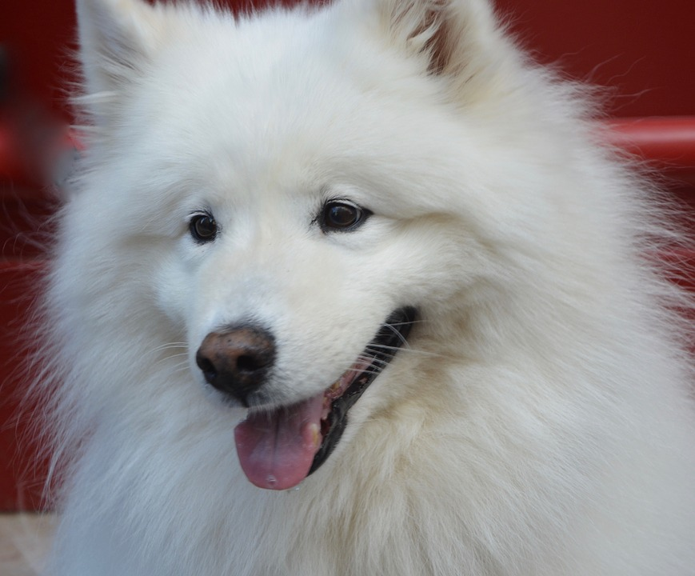

Training
American Alaskan Dog Breeds should seek puppy training as soon as their immunizations will allow. All of these breeds are highly energetic pack orientated canines whom require an owner who will train and exercise them daily all while assuming the role of the pack alpha to gain their companions loyalty and respect. The basics of learning to sit, stand, lay down, leave it, and heel, are the bare minimum training commands needed to know to ensure both the pet and owner are happy with one another. Left unattended or untrained and these breeds can prove to a nuisance to owners, children, and visitors while at home or in public. For more Information click -Here!
Grooming
Grooming is an important part of making sure your companion stays happy and healthy. It's important to get them used to the routine of regular grooming techniques such as nail trimming at a young age to help them become accustomed to it and keep their anxiety levels down. All American Alaskan dog breeds need at least a weekly brushing. Some such as the Samoyed will shed constantly and will need brushing at least twice a week, while other such as the Siberian Husky typically only shed twice a year and will only need brushed more than once a week during this time. Since these breeds clean themselves regularly unless your companion gets soiled outside playing, bathing can be done once every six months. For more information on proper grooming click - Here!
Health
Aside from regular exercise and grooming, immunizations for pets are essential to their life's longevity. Be sure to get yours regular veterinarian visits as well as immunizations. Vaccinations should include Rabies, Distemper-Parvo, Lymes, Lepto, as well as heartworm prevention. These breeds all prefer cold weather due to their natural thick coats of fur. If you live in area that has a warmer climate even if for only part of the year, make sure your pets have plenty of water, shade and/or air conditioning, and of course shelter preferably inside. Avoid exercising them during the hottest parts of the day and try to go out during cooler periods. To learn how to better look after your dogs health click - Here!
Nutrition
These breeds need a good quality nutritional food high in protein, plenty of fats, and low carbohydrates. Go for foods made from meat sources and avoid ones from sources such as wheat, corn, or soy. Puppies can need up to four small meals a day. At about six months meals can be brought down to three times a day, while adults only need two. Monitor your feeding portions and your dogs eating habits to help them avoid becoming over weight. Some of our breeds can go long periods of time without eating and can be very picky eaters, unlike other breeds that will eat anything. Only use treats from a trusted food supplier and don't give them bird bones as they're a choking hazard. If you are concerned about your dogs eating habits contact your veterinarian. To learn more click - Here!